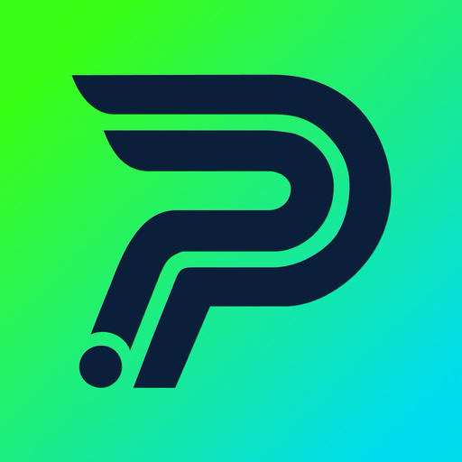

Plannot Android & iOS
Sports club management in one place: training schedules, the club roster, attendance and invitations. Coaches take the register, admins look after members and venues, and athletes see their week. English and Portuguese.